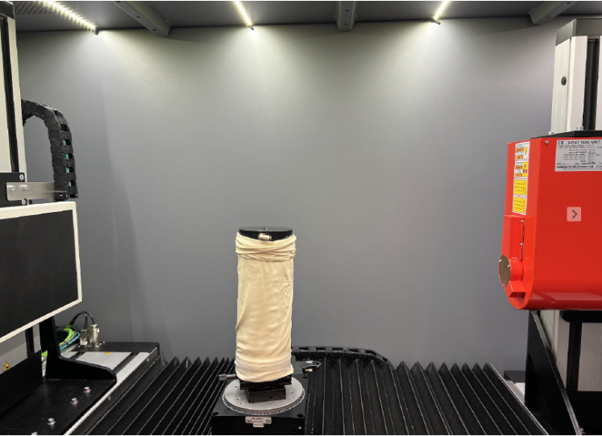
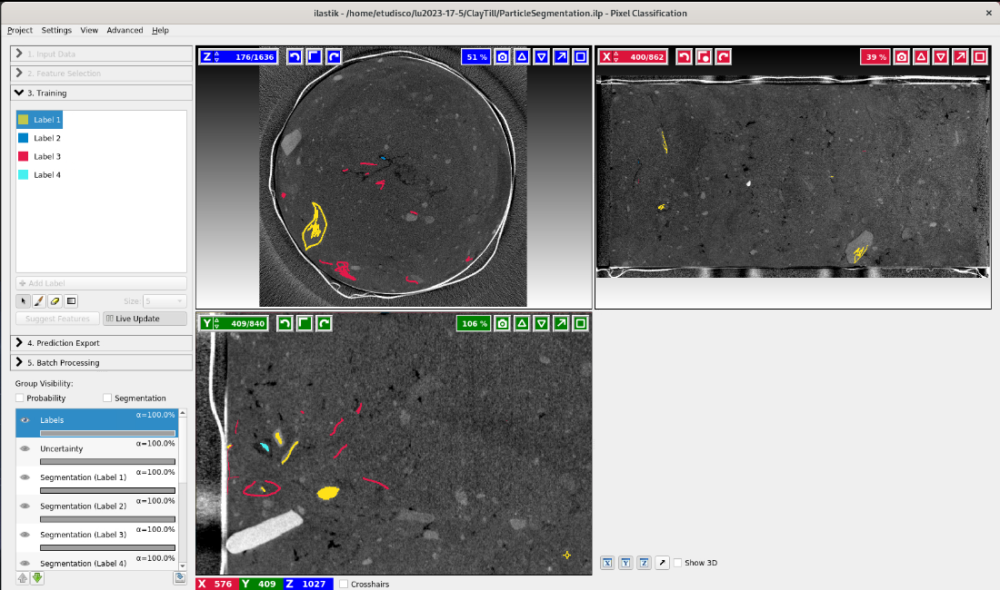
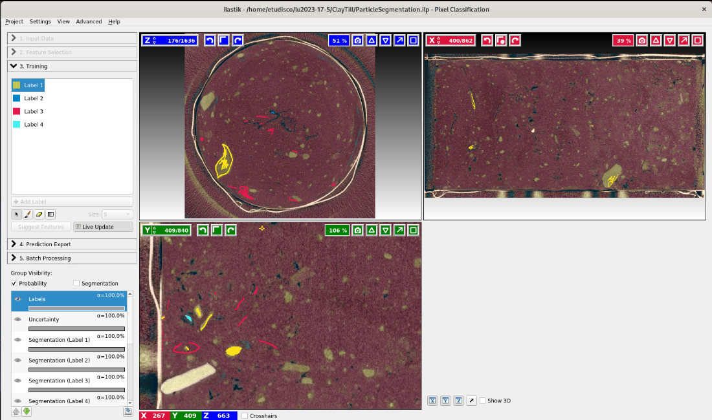
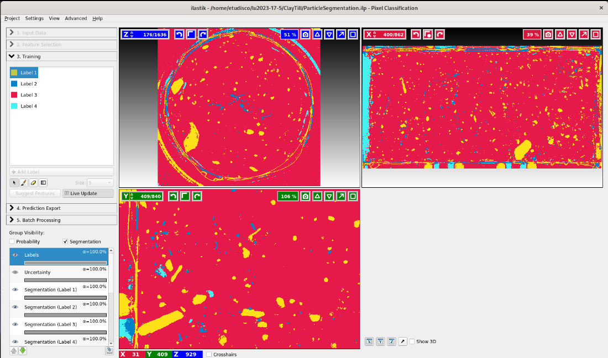

Image Analysis: From Interactive Setup to HPC Bulk Processing
Erika Tudisco, Geotechnical Engineering, LTH – Sweden
## BACKGROUND Clay till is poorly characterized <p>we want to test the mechanical properties and link them to easily measurable characteristics</p>
## METHODS <div class="contenitore"> <div class="colsx"> <ul> <li>Triaxial test</li> <li class="fragment" data-fragment-index="0">X-ray tomography</li> <ul> <li class="fragment" data-fragment-index="0">Two scans</li> <li class="fragment" data-fragment-index="0">Pixel size: 65 microns</li> <li class="fragment" data-fragment-index="0">Acquisition time: 50 min</li> </ul> <li class="fragment" data-fragment-index="1">Analysis of microstructure</li> <ul> <li class="fragment" data-fragment-index="1">Particle properties (size, shape, ...)</li> </ul> </ul> </div> <div class="coldx">  </div> </div>
## Particle segmentation: Ilastik run the program with gui <div class="r-stack">    </div>
## Python - Visual Code run graphycally on selected slices to find right patarameters
## Python - SLURMP jobs run jobs to analyse the entire volume
## Slide 1 A paragraph with some text and a [link](https://hakim.se). --- ## Slide 2 --- ## Results Labelled particles with properties --- ## Statistics